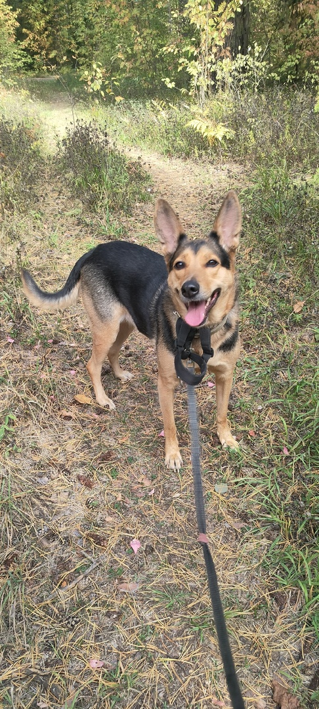
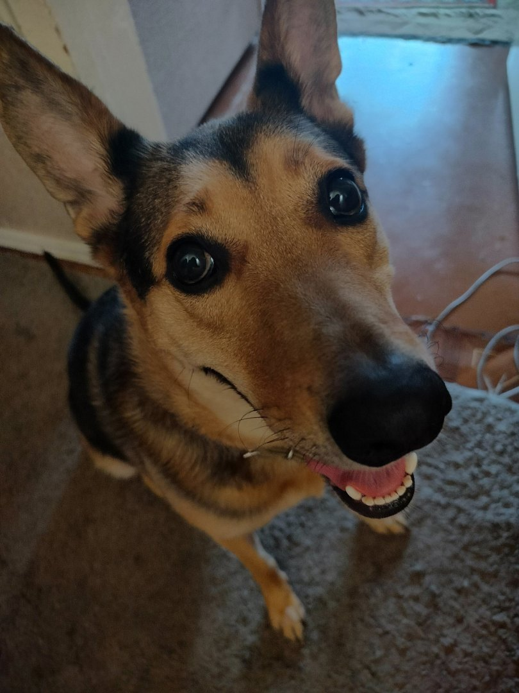
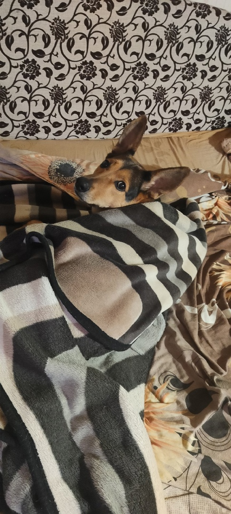

Домашнее задание №2
Тренина Анастасия
Рассказ про мою собаку Муху
У меня есть собака Муха! Ей 2 или 3 года. Мы точно не знаем, потому что нашли ее на улице.

Она очень классная собака. Многие думают, что это овчарка. Мы занимаемся с кинологом, потому что она плохо ведет себя на улице. И у нас есть прогресс. Мы с мухой любим бегать в парке, гулять. У Мухи есть друг Джейк. Он Хаски. Но она не знает, как намекнуть ему, что он ей нравится, потому что стесняется.
Любимые вещи Мухи:
- Есть вкусняшки
- Когда домой покупают чипсы
- Бегать на улице
- Будить рано утром
- А потом спать, когда все собираются на работу
- Обниматься
- Кататься на машине

Плюсы Мухи:
- С ней не скучно
- Днем она в основном спит
- Теперь ко мне домой редко заходят знакомые, потому что она на всех лает
- Спасение от депрессии (это не точно)
- Тебе не приходится есть в одиночестве
Минусы Мухи:
К сожалению, у всего есть недостатки, даже у Мухи
- Если на улице к нам кто-нибудь подойдет, она будет сильно лаять
- Твоя еда - ее еда
- Утренние зимние прогулки - это страшно

Заключение
Муха - хороший друг. Несмотря на некоторые недостатки, я всем советую завести свою Муху